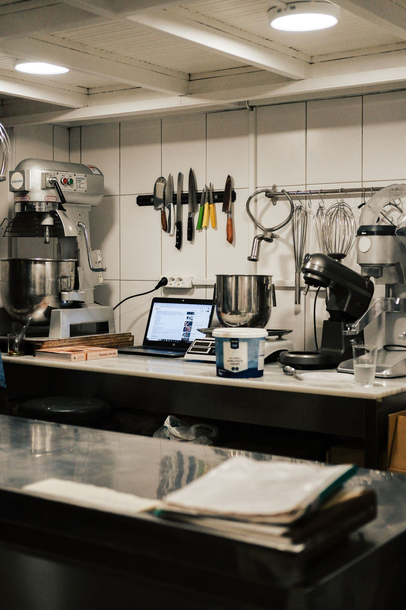

On parle beaucoup du four, rarement du pétrin. C'est pourtant lui qui décide de la texture de votre pâte, de sa tenue à la fermentation et de la régularité de vos pâtons d'un jour à l'autre. Un bon four ne rattrapera jamais une pâte mal pétrie.

Un pétrin professionnel n'a rien à voir avec un batteur mélangeur de pâtisserie. Sa mission est simple à énoncer et difficile à réussir : hydrater la farine, développer le réseau de gluten et incorporer un minimum d'air, le tout sans faire monter la température du pâton. Tout le reste — le choix de la cinématique, du nombre de vitesses, de la taille de cuve — découle de cet objectif.
C'est la première question, et elle dépend surtout de votre style de pâte et de votre volume quotidien.
Un outil en forme de spirale tourne dans une cuve qui tourne elle aussi, avec une barre centrale qui coupe la pâte. Pétrissage rapide, énergique et régulier, adapté aux pâtes de pizza moyennement à fortement hydratées. C'est le choix par défaut de 90 % des pizzerias : robuste, compact, facile à prendre en main.
L'outil travaille en biais et soulève la pâte plutôt que de l'écraser. Le pétrissage est plus long mais bien plus doux : oxydation limitée, échauffement très faible, excellent pour les pâtes à longue fermentation et les hydratations élevées type napolitaine. Investissement supérieur, encombrement supérieur.
Deux bras imitent le geste du pétrissage manuel. C'est le plus doux de tous, et le plus lent : 15 à 20 minutes de pétrissée. On le trouve surtout en boulangerie et chez les puristes de la pâte très hydratée. Rarement le premier achat d'une pizzeria, sauf positionnement artisanal assumé.
En pratique : si vous ouvrez, prenez un spirale. Si votre carte repose sur une pâte à 70 % d'hydratation et 48 h de maturation, l'axe oblique se défend vraiment. Les bras plongeants relèvent d'un choix de style, pas de rendement.
La plus courante et la moins chère. On sort la pâte à la main, cuve en place. Parfait jusqu'à 25 kg de farine environ. Au-delà, le débarrassage devient un exercice de force et le nettoyage sous l'outil, un exercice de patience.
La tête et l'outil se relèvent, libérant complètement la cuve. Gain de temps énorme sur le débarrassage et sur le nettoyage quotidien, donc sur l'hygiène réelle. C'est l'option que l'on regrette rarement d'avoir prise à partir de 25-30 kg.
La cuve se détache et roule jusqu'à la table de façonnage ou en chambre froide. Réservée aux gros volumes et aux laboratoires qui enchaînent les pétrissées : on relance une fournée pendant que la précédente pointe. Le haut du panier, et le prix qui va avec.
Règle d'or : on ne charge jamais un pétrin à ras bord, ni en dessous du tiers de sa capacité. Visez 60 à 75 % de la contenance annoncée pour un pétrissage propre. Les valeurs ci-dessous sont calculées sur des pâtons de 250 g et une hydratation d'environ 60 %.
| Capacité annoncée | Volume de cuve | Pâte par pétrissée | Pizzas de 250 g | Profil |
|---|---|---|---|---|
| 5 à 8 kg de farine | 10 à 12 L | 8 à 13 kg | 30 à 50 | Food truck, dépannage |
| 10 kg de farine | 16 à 18 L | 16 kg | env. 65 | Petite pizzeria à emporter |
| 18 à 20 kg de farine | 22 à 30 L | 29 à 32 kg | 115 à 130 | Pizzeria de quartier |
| 25 kg de farine | 38 à 42 L | 40 kg | env. 160 | Restaurant pizzeria |
| 40 kg de farine | 60 à 65 L | 64 kg | env. 255 | Fort volume, deux services |
| 50 kg de farine | 75 à 80 L | 80 kg | env. 320 | Laboratoire, multi-sites |
Un conseil de terrain : dimensionnez sur votre meilleur vendredi soir, pas sur votre moyenne hebdomadaire. Un pétrin trop juste vous condamne à enchaîner deux pétrissées avant le service, avec deux pâtes qui n'auront pas le même âge au moment de l'enfournement. À l'inverse, un pétrin surdimensionné utilisé au quart de sa cuve travaille mal : l'outil brasse dans le vide et la pâte ne se structure pas.
C'est le point technique le plus sous-estimé à l'achat, et celui qui vous coûtera le plus cher si vous le négligez.
La première vitesse assure le frasage : on mélange farine, eau, sel et levure jusqu'à obtenir une masse homogène, sans forcer. La seconde développe le gluten et donne l'élasticité et la tenue au pâton. Avec une seule vitesse, on compense en pétrissant plus longtemps — et c'est exactement ce qu'il ne faut pas faire.
Le frottement mécanique chauffe la pâte de 4 à 8 °C selon le pétrin et la durée. Or on cherche une pâte à 23-25 °C en fin de pétrissage. Au-delà de 26-27 °C, la fermentation s'emballe, la pâte devient collante, se déchire au façonnage et perd sa force avant même d'arriver au four.
Les trois leviers pour maîtriser la température : de l'eau froide (voire glacée l'été), une pétrissée courte en deuxième vitesse, et une cuve en inox qui ne stocke pas la chaleur. Prenez l'habitude de sonder la pâte à la sortie du pétrin, comme vous sondez la température de votre four : ce sont les deux thermomètres qui gouvernent votre produit.
Un pétrin de 10 à 20 kg de farine consomme typiquement 0,75 à 1,5 kW et se branche en monophasé 230 V. À partir de 25-40 kg, on monte à 2-4 kW et le triphasé 400 V devient la norme. Comme pour un four électrique, vérifiez la puissance réellement disponible dans votre local avant de commander : c'est le premier point à valider avec l'électricien, en même temps que l'installation du four et de l'extraction.
Cuve, spirale et barre centrale se nettoient à sec après chaque pétrissée, puis à l'eau tiède en fin de service — jamais au jet sous pression, qui noie les roulements. Surveillez la courroie et le jeu de l'axe une fois par trimestre. Un pétrin correctement entretenu tient dix à quinze ans en pizzeria, ce qui en fait l'un des meilleurs rapports investissement/durée de vie de tout votre labo.
Fourchettes hors taxes constatées sur du matériel neuf, hors livraison et manutention.
| Gamme | Capacité | Configuration | Prix indicatif HT |
|---|---|---|---|
| Petit pétrin à spirale | 10 à 20 L de cuve | Cuve fixe, 1 ou 2 vitesses | 900 – 2 500 € |
| Pétrin de pizzeria | 25 à 40 kg de farine | 2 vitesses, cuve fixe ou relevable | 2 000 – 5 000 € |
| Grosse capacité | 50 kg de farine et plus | Cuve relevable ou extractible | 5 000 – 15 000 € |
| Axe oblique | 20 à 40 kg de farine | Pétrissage doux, longue fermentation | 3 000 – 9 000 € |
Sur un budget d'ouverture, le pétrin représente rarement plus de 10 % de l'investissement matériel — face à un four à pizza qui en pèse souvent 40 %. C'est précisément pour cette raison qu'il ne faut pas y rogner : l'écart entre un pétrin d'entrée de gamme et un vrai pétrin de métier se compte en quelques centaines d'euros, et se lit dans l'assiette tous les jours.
Frasage en 1re vitesse, développement en 2e, sortie de cuve à 23-25 °C.
Repos en masse, division, pesée et boulage des pâtons en bacs.
Bacs à pâtons en chambre froide ou sous la table réfrigérée, 24 à 48 h.
À la main, ou au laminoir si le volume et l'équipe l'imposent.
Si vous montez un projet complet, regardez cette chaîne dans son ensemble plutôt qu'appareil par appareil : c'est tout l'objet de notre check-list du matériel de pizzeria.
Dites-nous votre cadence et votre type de pâte : vous recevez un devis chiffré sous 24 h, gratuit et sans engagement.